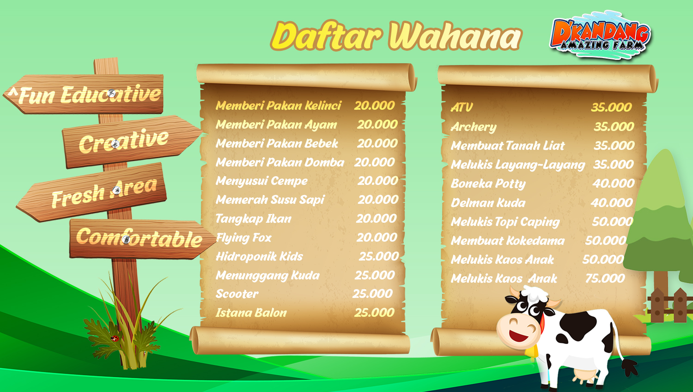
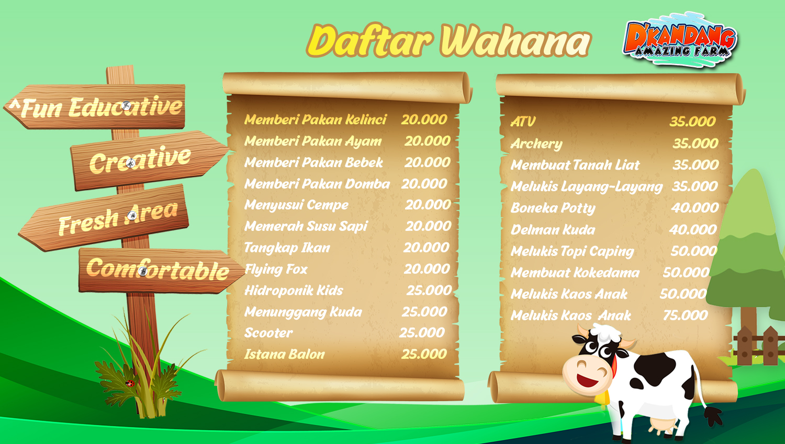

Wisata Edukasi D'kandang Amazing Farm


 

Fasilitas

D’KANDANG Amazing Farm berada di desa Pasir Putih kecamatan Sawangan kota Depok. Lokasi yang hijau dan asri, membuatnya terasa alami dan segar. Nuansa alam yang masih kental dengan aliran sungai yang mengelilingi farm menambah kesan natural.
D’KANDANG dengan konsep Fresh Food From Farm For Family yaitu mengintegrasikan konsep pertanian dan peternakan mulai hulu hingga hilir. Menghadirkan bagaimana pertanian dan peternakan diproses hingga hasil panennya yang siap konsumsi dengan menyuguhkan suasana yang hangat dan kekeluargaan. Sehingga tidak salah jika D’KANDANG menjadi tempat yang representatif sebagai wisata keluarga
Alamat&Peta Lokasi

"tempat ini sangat mengedukasi dan ramah anak"

"Kambingnya lucu saya mau bawa pulang"

"Kesini cuman ikut adek outingclass tapi tempatnya bagus ko"